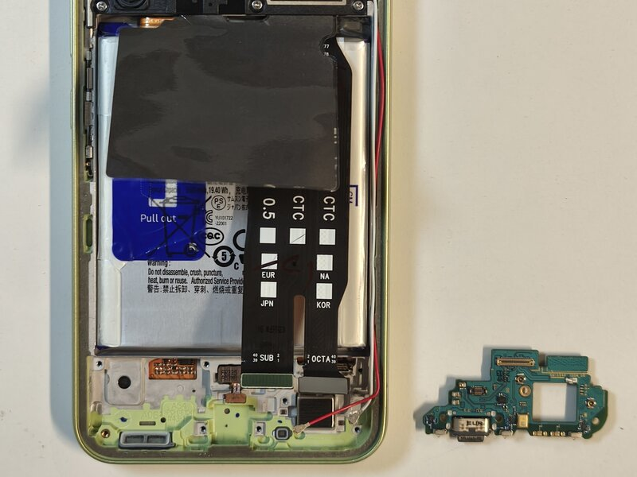

Find why callers cannot hear an Android phone
Use handset, speakerphone, recorder and headset checks to separate audio input, output, routing and a network problem.
Identify who cannot hear whom
“The call has no sound” can mean the far end hears nothing, the local earpiece is silent or audio is travelling through a paired headset. Modern phones often use more than one digital MEMS microphone. Voice, video and speakerphone can select different inputs or combine them. A recording that succeeds on one path gives you a useful comparison. It cannot certify every microphone. T47 · Acoustic paths and signal conversion.
Photo by Eavesdropper6735, scaled with on-page callouts. Original photo · CC0.


Photo by Martyna Bilski for iFixit, scaled for the course. Original photo · CC BY-NC-SA 3.0.
Watch. Find the test menu in Samsung Members, then choose a single audio diagnostic and record its result alongside the local recorder test. Samsung Care’s Galaxy diagnostics walkthrough on YouTube.
Build an audio route test card
Use your own phone, a quiet room, a known-good wired or Bluetooth headset if the model supports it and a consenting test caller. Remove the case. Inspect the documented microphone openings from outside with a light. Keep tools, cleaning fluid and compressed air away from the openings. A SIM tray pinhole can look similar. Identify each opening from the exact device drawing.
Disable Bluetooth and remove external audio accessories. Verify microphone access and the app’s permissions. In a locally installed recorder, speak the same short phrase at the same distance and level each time. Play it through a known-good output so a bad speaker does not mask a good recording.
Use the model’s built-in diagnostics when available. On supported Galaxy devices, open Samsung Members → Support → Phone diagnostics and choose the microphone test. Compare its result with the local recording. Then compare a normal call and speakerphone with the same caller. Record which end can hear you.
Change only the route. Repeat with the headset microphone and the same caller. If local checks are good and only one call or app fails, compare another authorised call or network condition. Keep no personal recordings or identifiers in a portfolio. Samsung’s microphone triage and mic test.
Inspect the acoustic path before selecting the part
Follow the exact phone’s parts drawing from the external opening to the mesh, gasket and microphone inlet. A displaced gasket, adhesive over the port or case occlusion can muffle a working device. The microphone may be soldered to a board, included in a flex or serviced only as part of an assembly. Locate the actual part in the manual before ordering. The Galaxy A54 charging daughterboard lesson shows the service route for that board. Use the exact variant’s service information to decide what it also carries.
| Reproducible symptom | Most useful next check |
|---|---|
| Recording becomes clear with the case removed | Check case and hole alignment before opening. |
| Recorder and mic diagnostic fail, but headset mic works | Compare the built-in input path, mesh and gasket. Use the model-specific test to narrow down the assembly. |
| Recorder and built-in test pass, only one call app fails | Check that app’s audio permission and routing and compare a known working call. Keep network symptoms with the ticket. |
| Far-end speech is audible on speakerphone only | Check the local earpiece output and route separately from the microphone. Compare with the sound module repair lesson. |
Record the method, audio input, output, receiver and pass or fail. After any repair, repeat the exact failed path and the alternatives. The IP phone lab shows what to do when the fault follows the network.